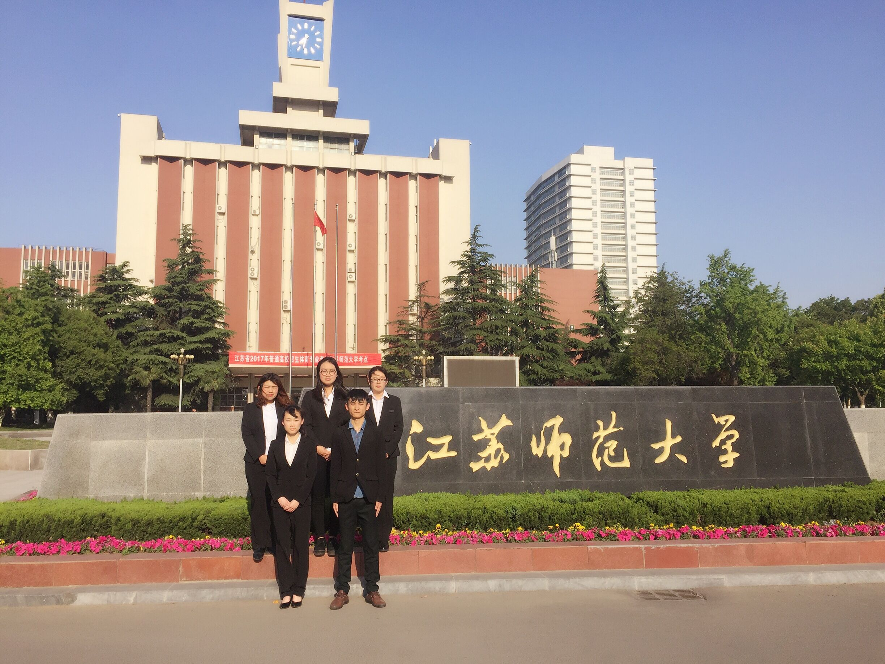

公司简介
新兴的数学建模商业化服务，强大的技术服务团队
徐州易次方信息科技有限公司致力于将数学建模从科技竞赛和科研领域引向商业化应用，利用数学建模解决企业在实际生产中的环境治理问题以及产业优化策略，旨在成为一家国内领先的数学建模解决方案优质服务商。公司的核心成员具有多年的数学建模应用实践经验以及市场营销能力，多次在国家级、省级竞赛中斩获佳绩，同时，博士两人、研究生一人、硕士多人组成了公司强大的技术顾问团队。
革新的数学建模精准化、定制化的创新理念
易次方科技根据多年的数学建模实践经验，研究生产中具有普遍适用性的问题，并提供解决方案，给企业定制化精准化的服务。在此基础中，拟开发建设出常见问题解决方案集成数据库。在市场推广中，拟采用“买服务送建议”的模式，在给企业提供针对性的解决方案书的同时，附赠常见问题解决建议，以利于市场的迅速拓展。
实际的应用推广与调研，客户评价良好
易次方科技专注于数学建模在企业环境治理方面以及实际生产优化策略的商业化应用推广，形成了专业的数学建模技术团队和完善的技术服务模式，已为多家企业提供了基于数学建模的烟囱智能优化、通风系统优化装置、重金属污染修正模型、污水排放三参量综合评价模型等解决方案。截至目前，公司团队已与徐州东南钢铁工业有限公司、兴化市盛利不锈钢材料有限公司、兴化市华祥金属制品有限公司、兴化市炬龙不锈钢制品厂等企业进行了技术服务洽谈，签定了合同。
二、企业文化
精神—我们的前景将超乎想象！
口号—简单化，具体化，量化，优化！
训语—没有最好，只有更好！
目标—国内领先的数学建模解决方案优质服务商。
宗旨—与客户一起成长！
三、可选内容：
徐州易次方信息科技有限公司的创业团队最初的核心成员有五个人，其中三个人是本科时代的数学建模合作伙伴。团队成员都参加过数学建模全国赛和美国（国际）大学生数学建模竞赛，并且取得了很好的成绩。由于共同的志趣和信念，创业团队一直致力于数学建模商业化应用的实践和探索。2016年，创办了易易商辉工作室，主要承接一些小型的数学建模工程应用项目研究。与此同时，正式确立以数学建模商业化应用为创业方向，组建了数学建模创业团队，开始了创业之路。
目前，我们的创业团队不断扩大，已经形成江苏师范大学本科5名的团队，团队成员分别来自不同学院、不同专业，其中部分核心成员有丰富的市场营销经验。同时，团队已经形成每一周一次的例会制度，完成了多个企业合作项目，并与徐州1家企业、泰州3家企业确定了合作意向。
